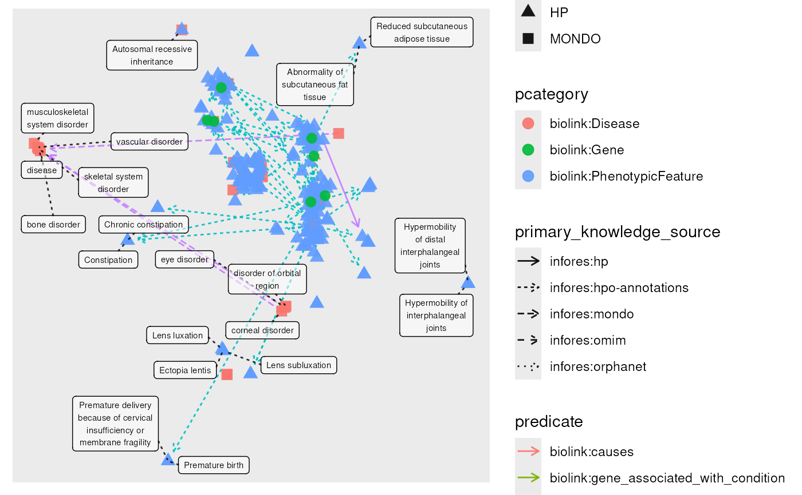

Generate a 2D or 2D layout of a graph using the UMAP algorithm. See here for details: igraph_layout_umap
layout_umap(graph, use_3d = FALSE, prefix = "UMAP", ...)A matrix of x and y coordinates for each node in the graph.
set.seed(2024)
filename <- system.file("extdata", "eds_marfan_kg.tar.gz", package = "monarchr")
g <- file_engine(filename) |>
fetch_nodes(pcategory=="biolink:Disease", limit=40) |>
expand(predicates = "biolink:has_phenotype",
categories = "biolink:PhenotypicFeature")|>
tidygraph::sample_n(200) |>
expand(categories = "biolink:Gene")
#> `sample_n()` argument `.env` is deprecated and no longer has any effect.
X <- layout_umap(g)
g <- graph_centrality(g)
#> Computing node centrality.
plot(g, layout=X, node_size=centrality)
#> Warning: ggrepel: 177 unlabeled data points (too many overlaps). Consider increasing max.overlaps
